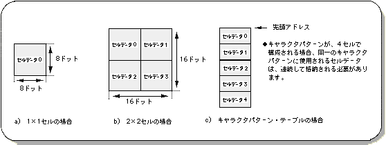
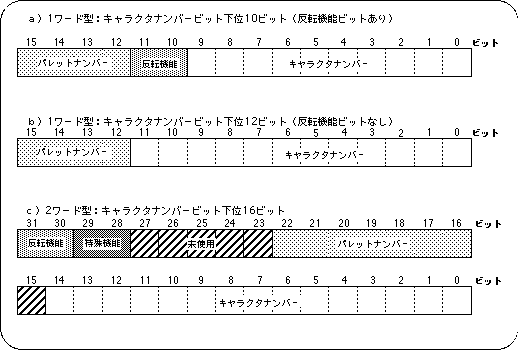
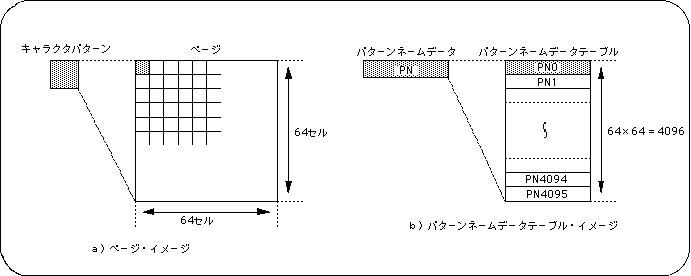
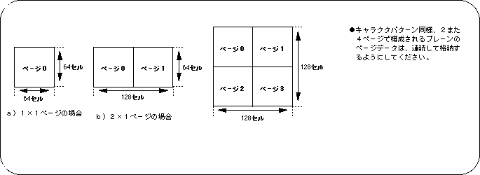
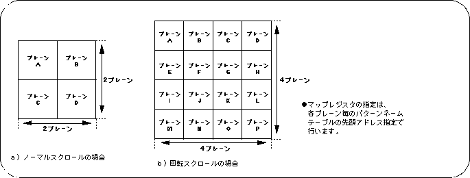
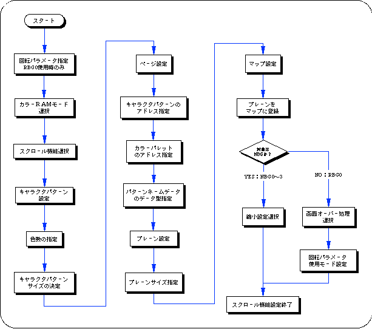

★SGL User's Manual
★PROGRAMMER'S TUTORIAL
★SGL User's Manual
★PROGRAMMER'S TUTORIAL
| 機能 | ノーマルスクロール | 回転スクロール | |||
|---|---|---|---|---|---|
| NBG0 | NBG1 | NBG2 | NBG3 | RBG0 | |
| キャラクタ色数 | 16色 256色 2048色* 32768色 1677万色 より選択 |
16色 256色 2048色* 32768色 より選択 |
16色 256色 より選択 |
16色 256色 より選択 |
16色 256色 2048色* 32768色 1677万色 より選択 |
| キャラクタサイズ | 横1×縦1セル、横2×縦2セルより選択 | ||||
| パターンネームデータサイズ | 1ワード、2ワードより選択 | ||||
| プレーンサイズ | 横1×縦1ページ、横2×縦1ページ、横2×縦2ページより選択 | ||||
| プレーン数 | 4 | 4 | 4 | 4 | 16 |
| 拡大縮小機能 | 1/4倍〜256倍 | なし | 任意倍率 | ||
| 回転機能 | なし | あり | |||
また、ＶＲＡＭアクセス指定制限以外にも、ノーマルスクロール画面“NBG0〜3”のキャラクタ色数設定からくるスクロール描画制限も存在します。
（キャラクタパターンの項参照）
これら２つの制限により、同時に描画可能なスクロール面数及びその機能は限定され、決定されます。
図8-9 キャラクタパターンイメージ

カラー形式 | キャラクタ色数 | 1ドットあたりのビット数 | スクロール面による使用可能色数 | ||||
|---|---|---|---|---|---|---|---|
| NBG0 | NBG1 | NBG2 | NBG3 | RBG0 | |||
| パレット形式 | 16色 | 4ビット | ○ | ○ | ○ | ○ | ○ |
| 256色 | 8ビット | ○ | ○ | ○ | ○ | ○ | |
| 2048色 | 16ビット (下位11ビットのみ使用) | ○ | ○ | × | × | ○ | |
| ＲＧＢ形式 | 32768色 | 16ビット | ○ | ○ | × | × | ○ |
| 1677万色 | 32ビット (MSBと下位24ビット使用> | ○ | × | × | × | ○ | |
| キャラクタ色数 | キャラクタサイズ | ||||||
|---|---|---|---|---|---|---|---|
| パレット形式 | ＲＧＢ形式 | ||||||
| 16色 | 256色 | 2048色 | 32768色 | 1677万色 | 1x1 | 2x2 | |
代入値 | COL_TYPE_16 | COL_TYPE_256 | COL_TYPE_2048 | COL_TYPE_32768 | COL_TYPE_1M | CHAR_SIZE_1x1 | CHAR_SIZE_2x2 |
| NBG0,NBG1の色数 | 有効なスクロール面 | ||||
|---|---|---|---|---|---|
| NBG0 | NBG1 | NBG0 | NBG1 | NBG2 | NBG3 |
| 1677万色 | ＊ | ○ | × | × | × |
| 2048色or32678色 | ＊ | ○ | ○ | × | × |
| ＊ | 2048色or32678色 | ○ | ○ | ○ | × |
| 2048色or32678色 | 2048色or32678色 | ○ | ○ | × | × |
キャラクタナンバー：キャラクタパターンの先頭アドレス（VRAM）
キャラクタパターンは20Hを１単位として格納されています
パレットナンバー ：使用するカラーパレットのパレットナンバー（カラーRAM）
パターンネームデータは、上記２情報に加え、キャラクタパターンに関わる次の２つの機能制御ビットを加えた形で最終的に構成されます。
特殊機能ビット（２ビット）：特殊カラー演算、特殊プライオリティを制御
反転機能ビット（２ビット）：キャラクタパターンの上下左右反転を制御
パターンネームデータは、内包する情報量の差から下図の a)、b）、c）に示す３つの型に分類されます。
（詳細については、次項参照）
図はパターンネームデータのイメージモデルです。この図からパターンネームデータの型によって、特殊機能ビットや反転機能ビットが含まれる場合と含まれない場合があることがわかります。

パターンネームデータは、ページ設定の際に用いられ、６４×６４分の連続したパターンネームデータを一固まりとして、パターンネームデータテーブルが作成され、プレーンやマップに配置情報が渡されます。
| ワード・サイズ | キャラクタナンバービット数 | 備 考 |
|---|---|---|
| ☆ 1ワード | 下位10ビット | 反転機能をキャラクタ単位で指定可能 |
| 下位12ビット | 反転機能はない | |
| 2ワード | 下位15ビット | 反転機能をキャラクタ単位で指定可能 |
 |
ＳＧＬでは１ワードサイズを推奨します。 |
|---|
図8-11 ページイメージ

| ワード数 | キャラクタナンバービット | 代入値 |
|---|---|---|
| 1ワード | 下位10ビット | PNB_1WORD |
| 下位12ビット | PNB_1WORD|CN_12BIT | |
| 2ワード | 下位16ビット | PNB_2WORD |
slPageNbg0(NBG0_CELL_ADR,0,PNB_1WORD|CN_10BIT); ↑ ↑↑ ↑ ： ：： キャラクタナンバービット指定 ： ：ワード数指定 ： パレット先頭アドレス(オフセット指定) キャラクタパターン先頭アドレス
リスト8-1 ページ設定パラメータに関わる#define
● ページ設定パラメータに使用した#define ● /* VRAM_BANK ADDRESS */ #define VDP2_VRAM_A0 0x25e00000 #define VDP2_VRAM_A1 0x25e20000 #define VDP2_VRAM_B0 0x25e40000 #define VDP2_VRAM_B1 0x25e60000 /* slPage */ #define PNB_2WORD 0 #define PNB_1WORD 0x8000 #define CN_10BIT 0 #define CN_12BIT 0x4000 /* others */ #define NBG_CELL_ADR VDP2_VRAM_B0
図8-13 プレーンイメージ

| プレーンサイズ | |||
|---|---|---|---|
| 横１×縦１ | 横２×縦１ | 横２×縦２ | |
| 代 入 値 | PL_SIZE_1x1 | PL_SIZE_2x1 | PL_SIZE_2x2 |
図8-14 マップイメージ

注 意 |
回転パラメータについては、後述の |
|---|
| スクロール種 | 名称 | 拡大縮小 | 拡大縮小範囲 |
|---|---|---|---|
| ノーマルスクロール画面 | NBG0 | ○ | 1/4〜256倍 |
| NBG1 | ○ | 1/4〜256倍 | |
| NBG2 | × | ||
| NBG3 | × | ||
| 回転スクロール | RBG0 | ○ | 任意倍率 |
ＳＧＬで縮小設定を行うには、縮小設定を行うノーマルスクロール画面に対応したライブラリ関数“slZoomModeNbg0,1”を使用してください。
| プレーンサイズ | |||
|---|---|---|---|
１倍 | 1／2倍 | 1／4倍 | |
| 代 入 値 | ZOOM_1 | ZOOM_HALF | ZOOM_QUATER |
| モード0 | モード1 | モード2 | モード3 | |
|---|---|---|---|---|
| 代 入 値 | RA | RB | K_CHANGE | W_CHANGE |
| 回転パラメータA | 回転パラメータB | |
|---|---|---|
| 代 入 値 | RA | RB |
注意
回転パラメータの詳細は、“HARDWARE MANUAL vol.2”を参照してください
（VDP2 ユーザーズマニュアル）
| オーバー処理モード | ||||
|---|---|---|---|---|
| モード0 | モード1 | モード2 | モード3 | |
| パラメータ代入値 | ０ | １ | ２ | ３ |
フロー8-1 スクロール機能設定の流れ

★SGL User's Manual
★PROGRAMMER'S TUTORIAL